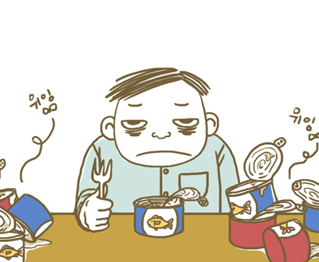
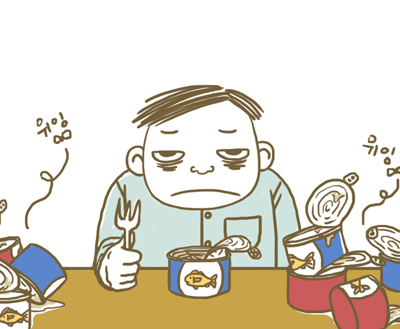
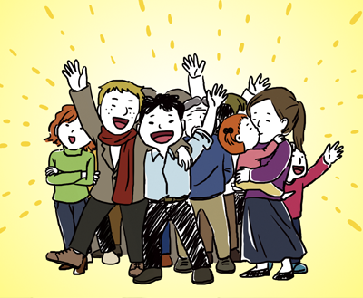
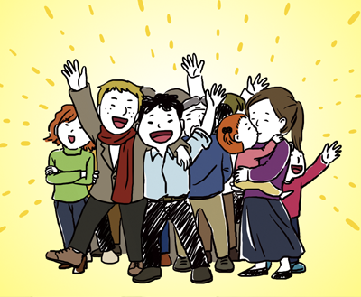

Search
Search
WAGL shares the cases on A.R.T. Democracy through various media including lecture, booklet, blog, video clip and etc.
WAGL discovers, studies, and introduces specific cases of A.R.T. Democracy, a form of governance that is driven by citizen participation.
 



 
